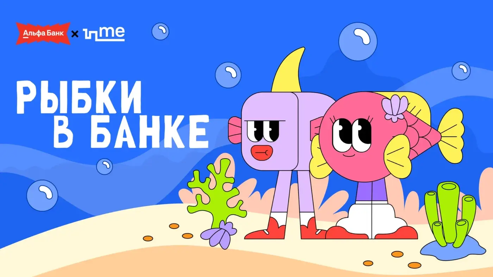
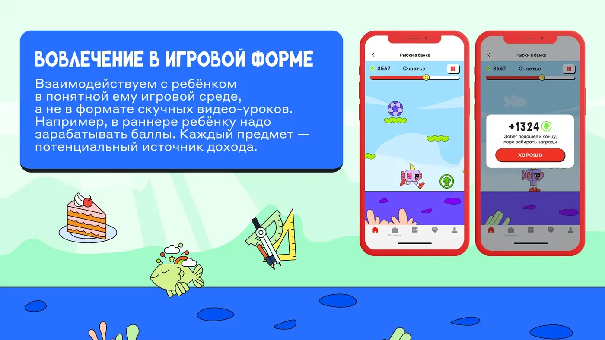
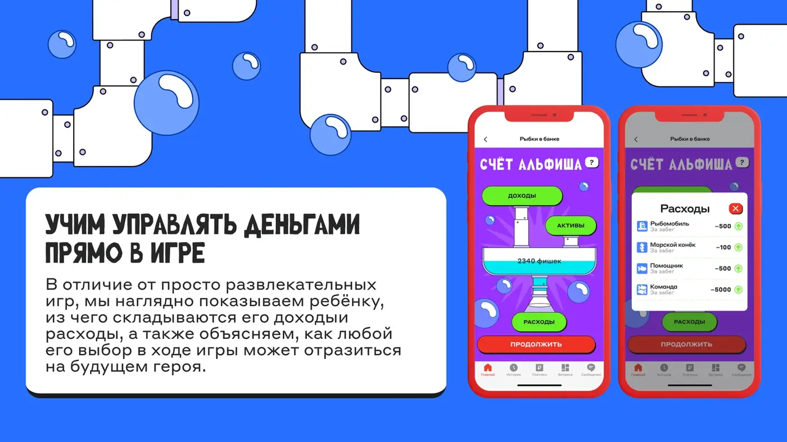

Обучить детей 6–13 лет основам финансов
Игра должна была объяснить рациональное отношение к деньгам и показать, как банковские инструменты — включая Детскую карту — могут помогать в реальной жизни.
Alfa Bank · Game design · Financial literacy
Игра для детей 6–13 лет, которая помогает освоить финансовую грамотность через приключение главного героя Альфиша.
О проекте
Игрок проходит путь вместе с Альфишем: бегает, собирает фишки и предметы, выполняет миссии и участвует в событиях.
Игровая механика мягко знакомит ребёнка с рациональным отношением к деньгам, Детской картой и банковскими сервисами. Результат: около 148 500 игроков и 1,6 млн забегов.
CASE BREAKDOWN / KIDS GAME
Игра должна была объяснить рациональное отношение к деньгам и показать, как банковские инструменты — включая Детскую карту — могут помогать в реальной жизни.
Персонаж проходит путь от школьника до владельца собственного бизнеса. Развитие героя связывает игровые события с понятной ребёнку моделью взросления и самостоятельности.
Игрок быстро перемещается, собирает фишки и предметы, выполняет задания и участвует в событиях. Финансовые темы встроены в игровой прогресс, а не подаются как отдельный урок.
Проект собрал около 148 500 игроков, 1,6 млн забегов и примерно 23 500 пользовательских шеров.


